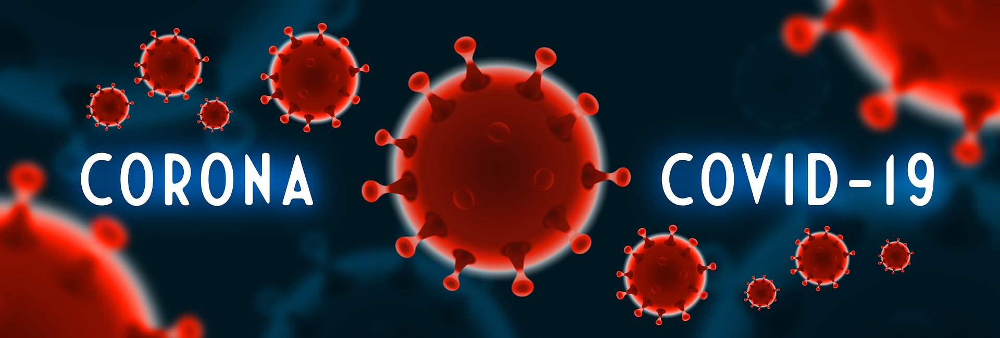

Covid-19
About Covid-19:-
COVID-19 is a dangerous disease caused by a virus discovered in December 2019 in Wuhan, China. It is very contagious and has quickly spread around the world. COVID-19 most often causes respiratory symptoms that can feel much like a cold, a flu, or pneumonia, but COVID-19 can also harm other parts of the body
Why is it called Covid-19?
On February 11, 2020, the World Health Organization announced an official name for the disease: coronavirus disease 2019, abbreviated COVID-19. ‘CO’ stands for ‘corona,’ ‘VI’ for ‘virus,’ and ‘D’ for disease. The virus that causes COVID-19, SARS-CoV-2, is a coronavirus. The word corona means crown and refers to the appearance that coronaviruses get from the spike proteins sticking out of them.
About the Vaccine:-
A COVID‑19 vaccine is a vaccine intended to provide acquired immunity against severe acute respiratory syndrome coronavirus 2 (SARS‑CoV‑2), the virus causing coronavirus disease 2019 (COVID‑19). Prior to the COVID‑19 pandemic, there was an established body of knowledge about the structure and function of coronaviruses causing diseases like severe acute respiratory syndrome (SARS) and Middle East respiratory syndrome (MERS), which enabled accelerated development of various vaccine technologies during early 2020.[152] On 10 January 2020, the SARS-CoV-2 genetic sequence data was shared through GISAID, and by 19 March, the global pharmaceutical industry announced a major commitment to address COVID-19.